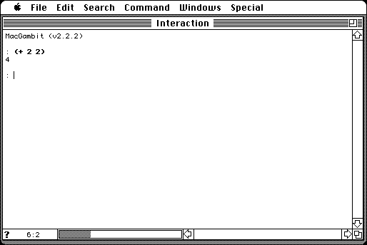

Download
MacGambit2.2.2.zip (1.4M) MacGambit 2.2.2 repackaged into a zipped hfs disk image and checksum file. The disk image can be mounted with Mini vMac.
MacGambit2.2.2.sea.hqx (2M) MacGambit 2.2.2 in the original format.
copyright: Universite de Montreal, Marc Feeley, Doug Currie
mod date: Oct 14, 1995
license: free for non-commercial use, (donations requested?)
from url :
MacGambit
(The
main Gambit page
links to a distributions page containing the above link.)
Scheme interpreter and compiler. Source code is included.

If you find these downloads useful, please consider helping the Gryphel Project, which hosts them.
Here are the md5 checksums for the downloads, signed with Gryphel Key 5:
--------- GRY SIGNED TEXT --------- 1965c4e7d8d51555c6940930130c35a9 MacGambit2.2.2.zip 493d99961cfb3a09ed6cb6ce31a134a3 MacGambit2.2.2.sea.hqx ------- BEGIN GRY SIGNATURE ------- Gry/4Xa8CFcUzxdN/DfAy1jWI9UGz3fqD0b0NqnyFwDUB3R1hVn0mG2kUU5bmx/r G+jrs6wvUded+YVP7Rnh2UiEwv477y5Dh9LROgD4YtE6sefJMFJ/2uyAHGE4KjBg r8IhA0jw/82yP+xrRsX2pVq1VEuQrwgHFlnDhLyLvFn7Kb6hRrhPoDlsUkzR2mX2 -------- END GRY SIGNATURE --------